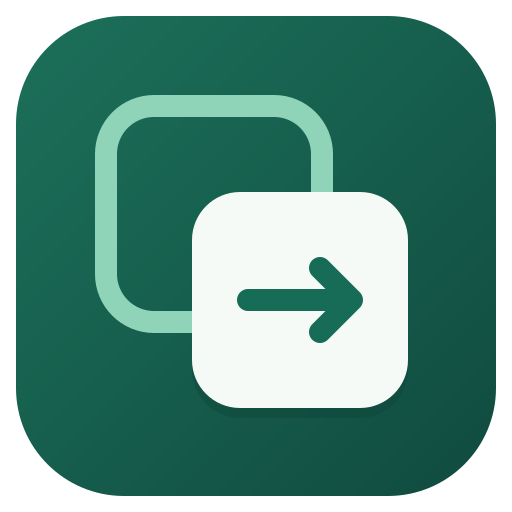

完整跟随
按下就是按下，松开就是松开。
长按和连续点击都保留原本的手感。

轻映Simple Keymap在这里体验映射，不会发送真实按键。
按下就是按下，松开就是松开。
长按和连续点击都保留原本的手感。
选择两个按键，添加即可生效。
也可以直接按一下，完成录入。
规则自动保存在本机。
最小化继续运行，关闭窗口即退出。
从第一条映射开始
例如，让鼠标侧键 1 完整替代滚轮中键。
选择「鼠标侧键 1」，或点击「录入按键」后按一下侧键。
选择「鼠标中键」。键盘和鼠标按键之间，也可以互相映射。
点击「添加映射」，回到其他应用。你的按下和抬起会同步过去。
随时暂停 / 恢复全部映射
每条规则也能单独开关轻装上阵
无需安装驱动，也不用注册账号。
保留同一文件夹里的两个程序，运行 SimpleKeymap.exe。
Windows 10 / 11 · 64 位
在 GitHub 查看源码 加速下载由 gh-proxy.com 提供，不可用时请使用 GitHub。版本号和更新说明见发布页。你可能想知道
支持鼠标左键、右键、中键、侧键 1 / 2，以及字母、数字、F1–F12、方向键、常用编辑键、小键盘、媒体键等。轻映专注单个按键的映射，不提供宏、组合键或滚轮滚动映射。
取决于游戏是否接受 Windows 模拟输入。目标程序以管理员运行时，轻映也需要相同权限。部分游戏或受保护程序可能不接受模拟输入，轻映不承诺对所有游戏生效。
为了方便修改配置，轻映在自己的窗口内暂不执行映射。请切换到其他应用后再试；最小化后仍会继续运行，关闭窗口则会停止映射并退出。
规则仅保存在本机的 %APPDATA%/SimpleKeymap/config.json。轻映不上传按键记录，不做账号或云端同步。网页也没有统计脚本。
程序会暂停映射并显示原因。若 Windows 输入调用卡在内核里，请先保存工作并重启 Windows；反复结束任务或重新开启映射不能保证恢复输入链路。反馈时请附上系统版本、目标应用和复现步骤。
支持与反馈
遇到问题，来群里聊聊；觉得好用，也欢迎请作者喝杯咖啡。